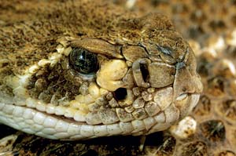

DWIGHT KUHN
Pit vipers (which includes the rattlesnake, shown here, and the copperhead and cottonmouth) are so named for their distinguishing facial pits. Located between their eyes and nostrils, these pits sense heat and help the snakes detect prey.